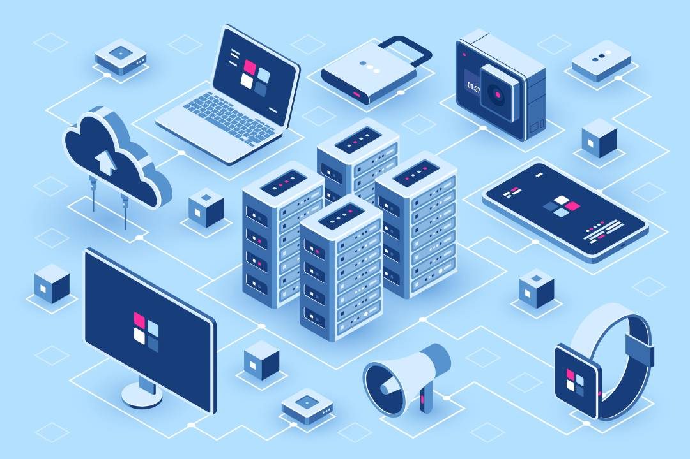

Base de datos
Una base de datos (del inglés: database) se encarga no solo de almacenar datos, sino también de conectarlos entre sí en una unidad lógica. En términos generales, una base de datos es un conjunto de datos estructurados que pertenecen a un mismo contexto y, en cuanto a su función, se utiliza para administrar de forma electrónica grandes cantidades de información. En este sentido; una biblioteca puede considerarse una base de datos compuesta en su mayoría por documentos y textos impresos en papel e indexados para su consulta. Actualmente, y debido al desarrollo tecnológico de campos como la informática y la electrónica, la mayoría de las bases de datos están en formato digital, siendo este un componente electrónico, por tanto se ha desarrollado y se ofrece un amplio rango de soluciones al problema del almacenamiento de datos.
Hay programas denominados sistemas gestores de bases de datos, abreviado SGBD (del inglés Database Management System o DBMS), que permiten almacenar y posteriormente acceder a los datos de forma rápida y estructurada. Las propiedades de estos DBMS, así como su utilización y administración, se estudian dentro del ámbito de la informática.
Las aplicaciones más usuales son para la gestión de empresas e instituciones públicas; También son ampliamente utilizadas en entornos científicos con el objeto de almacenar la información experimental.
Aunque las bases de datos pueden contener muchos tipos de datos, algunos de ellos se encuentran mutuamente protegidos por las leyes de varios países. Por ejemplo en España, los datos personales se encuentran protegidos por la Ley Orgánica de Protección de Datos de Carácter Personal (LOPD), en México por la Ley Federal de Transparencia y Acceso a la Información Pública Gubernamental y en Argentina por la Ley de Protección de Datos Personales.
En Argentina el Código Penal sanciona ciertas conductas relacionadas con una base de datos: acceder ilegítimamente a un banco de datos personales, proporcionar o revelar información registrada en un archivo o en un banco de datos personales cuyo secreto estuviere obligado a guardar por ley o insertar o hacer insertar datos en un archivo de datos personales. Si el autor es funcionario público, sufre además pena de inhabilitación especial.
Según la variabilidad de la base de datos
R/ cuyo fin tiene las base de datos son como denominada como por ejemplo las empresa tiene requisitos para dar empleo a las personas y para que eso suceda tiene que hacer hojas de vida poner sus datos personal y poner a prueba su capacidad como empleado.
Bases de datos estáticas
R/es la base que se utiliza para fines de análisis estadísticos.es un OLAP en lugar del sistema OLTP.
Son bases de datos únicamente de lectura, utilizadas principalmente para almacenar datos históricos que posteriormente se pueden utilizar para estudiar el comportamiento de un conjunto de datos a través del tiempo, realizar proyecciones, tomar decisiones y realizar análisis de datos para inteligencia empresarial.
Bases de datos dinámicas
R/ es aquella en la que se almacenan datos que pueden variar con el paso del tiempo.
Son bases de datos donde la información almacenada se modifica con el tiempo, permitiendo operaciones como actualización, borrado y edición de datos, además de las operaciones fundamentales de consulta. Un ejemplo, puede ser la base de datos utilizada en un sistema de información de un supermercado.
Para crear un programa y que la computadora lo interprete y ejecute, las instrucciones deben escribirse en un lenguaje de programación.
El lenguaje entendido por una computadora se conoce como código máquina. Consiste en secuencias de instrucciones básicas que el procesador reconoce, codificadas como cadenas de números 1 y 0 (sistema binario). En los primeros tiempos de la computación se programaba directamente en código máquina. Escribir programas así resultaba demasiado complicado, también era difícil entenderlos y mantenerlos una vez escritos. Con el tiempo, se fueron desarrollando herramientas para facilitar el trabajo.
Los primeros científicos que trabajaron en el área decidieron reemplazar las secuencias de unos y ceros por mnemónicos, que son abreviaturas en inglés de la función que cumple una instrucción de procesador. Por ejemplo, para sumar se podría usar la letra A de la palabra inglesa add (añadir). Crearon así una familia de lenguajes de mayor nivel, que se conocen como lenguaje ensamblador o simplemente ensamblador (en inglés, assembly). Con el tiempo los ensambladores incorporaron facilidades adicionales, pero siempre manteniendo una correspondencia directa con las instrucciones de procesador. A nivel conceptual, entonces, programar en ensamblador es muy similar a hacerlo en lenguaje máquina, solo que de una forma más amigable. Programación
A medida que la complejidad de las tareas que realizaban las computadoras aumentaba, el lenguaje ensamblador fue mostrando limitaciones. Para hacer un programa había que conocer en detalle el funcionamiento de la computadora donde se iba a ejecutar, qué instrucciones proveía y cómo emplearlas. A veces las instrucciones eran demasiado básicas, por ejemplo podía haber una para sumar dos números pero no para multiplicar, y entonces era necesario programar un algoritmo que realizara la multiplicación con base en instrucciones más básicas. Otras veces, la forma de emplear las instrucciones era engorrosa. Además, si se usaba otro modelo de computadora, en muchos casos había que reescribir el programa con otras instrucciones. El siguiente paso fue crear los lenguajes de alto nivel.
Una vez que se termina de escribir un programa, es necesario de alguna forma traducirlo a lenguaje máquina, que es lo único que entiende el procesador. Esta tarea es automática, por medio de un programa adicional que toma el código escrito y lo procesa. Hay distintos enfoques para este procesamiento. El enfoque clásico se llama compilación: el programa toma el código en un lenguaje y genera código en el otro; al programa traductor se lo llama compilador. En general se habla de compilación y compiladores cuando el lenguaje de origen es de alto nivel; si la traducción es desde lenguaje ensamblador, se llama ensamblado y el programa se llama ensamblador (hay que distinguir el lenguaje ensamblador del programa ensamblador; en inglés es más claro, son assembly language y assembler respectivamente). Generalmente existe una fase posterior a la compilación denominada enlace o enlazado (linking en inglés). Los programas pueden escribirse en partes separadas y además pueden usar recursos provistos por bibliotecas. El enlazado, realizado por un programa llamado enlazador, combina todos los componentes y así genera un programa ejecutable completo.
En algunos lenguajes de programación, puede usarse un enfoque diferente que no requiera compilación y enlace: un programa llamado intérprete va leyendo el código y realizando en el momento las acciones que haría el programa. Se evita generar código separado y la experiencia es que se está ejecutando el código en el lenguaje de alto nivel, a pesar de que el procesador no lo entienda de forma nativa.
Los sistemas informáticos pasan por diferentes fases en su ciclo de vida, desde la captura de requisitos hasta el mantenimiento. En la actualidad se emplean numerosos sistemas informáticos en la administración pública, por ejemplo, las operadoras de la policía, el servicio al cliente, entre otras.
Empezó como una máquina de cálculo aritmético conocida como la máquina analítica. Sin embargo, podemos situar el origen de las computadoras en un sentido estricto en el año 1936, cuando Konrad Zuse inventó la Z1, la primera computadora programable. Aquí comienza la llamada primera generación, que abarca hasta el año 1946, teniendo propósitos básicamente militares. Fue en esta década donde se implementarían nuevos protocolos en la computación, una de ellas dio pie a los primeros pasos del Internet de aquel entonces (ARPANET).
Es el año 1983 el que normalmente se marca como el año en que «nació Internet». Fue entonces cuando el Departamento de Defensa de los Estados Unidos decidió usar el protocolo TCP/IP en su red Arpanet creando así la red Arpa Internet. Con el paso de los años se quedó con el nombre de únicamente «Internet».
La ENIAC se ha considerado, históricamente, como la primera computadora de propósito general, aunque el título le pertenece en realidad a la computadora alemana Z1.
⨕ Sistemas de uso específico. En sistemas complejos es frecuente tener subsistemas que se encargan de tareas específicas como por ejemplo el sistema de detección de intrusos o el sistema de monitorización.
⨕ Sistemas de uso general.
Lo podemos encontrar en estos enlaces:
✓ Ejemplo 1 → https://es.wikipedia.org/wiki/Sistema_inform%C3%A1tico
✓ Ejemplo 2 → https://www.areatecnologia.com/informatica/sistema-informatico.html
✓ Ejemplo 3 → Descarga el PDF
Un entorno de desarrollo es un conjunto de procedimientos y herramientas que se utilizan para desarrollar un código fuente o programa. Este término se utiliza a veces como sinónimo de entorno de desarrollo integrado (IDE), que es la herramienta de desarrollo de software utilizado para escribir, generar, probar y depurar un programa. También proporcionan a los desarrolladores una interfaz de usuario común (UI) para desarrollar y depurar en diferentes modos.
A la hora de elegir en entorno de desarrollo o IDE (Integrated Development Environment) es fundamental tener definido qué lenguaje de programación se va a utilizar tanto en el Frontend (la parte visible de la web) como en el Backend.
Niveles del entorno de desarrollo
El entorno de desarrollo normalmente tiene tres niveles de servidores, clasificados como desarrollo, montaje y producción. Los tres niveles juntos se denominan generalmente como el DSP.
Servidor de desarrollo: Aquí es donde el desarrollador prueba el código y comprueba si la aplicación se ejecuta correctamente con ese código. Una vez que la implementación ha sido probada y el desarrollador considera que el código trabaja de forma correcta, la aplicación se mueve entonces al servidor intermedio de montaje.
Servidor de integración: Este entorno se hace para que se vea exactamente igual que el entorno del servidor de producción. La aplicación se prueba en el servidor de ensayo para comprobar la fiabilidad y para asegurarse de que no falla en el servidor de producción real. Este tipo de pruebas en el servidor intermedio es el último paso antes de que la aplicación se despliegue en un servidor de producción. La aplicación tiene que ser aprobada con el fin de implementarla en el servidor de producción.
Servidor de producción: Una vez realizada la aprobación, la aplicación se convierte en una parte de este servidor.